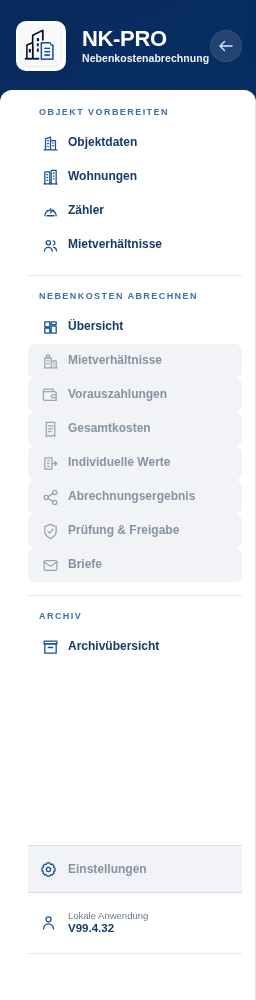

Verbindlich sind Arbeitsflächen, Hierarchie, Karten, Tabellen, Formulare, Statusfarben, Icons, Abstände, Radien und Schatten. Die dargestellte Navigation wird nicht übernommen.
Geschützte Bestandskomponente
Navigation V99.4.32
Nicht verändern

Vertraglicher Schutz
Struktur, Gruppierung, Reihenfolge, aktive Zustände, Klappverhalten, Icons, Fokus und Responsive-Overlay bleiben unverändert. Diese Abbildung ist eine aus der Produktbasis erzeugte Bestandsreferenz.
Seitenanatomie
Seitenschale, Kopf und Abrechnungskontext
NK PRO
AbrechnungskontextObjekt: Musterstraße 12Zeitraum: 01.01.2025 – 31.12.2025Status: In Prüfung
Nebenkosten abrechnen
Abrechnung – Übersicht
Arbeitsstand prüfen, offene Punkte bearbeiten und den Abschluss vorbereiten.
Schreibgeschützte Abrechnung
Diese Abrechnung ist schreibgeschützt. Änderungen sind erst nach dem Öffnen zur Bearbeitung möglich.
Verbindliche Regel: Die gelbe Abrechnungskontextleiste zeigt Objekt, vollständigen Zeitraum und Status, jedoch keine Modusangabe. Der Nur-ansehen-Zustand wird durch die handlungsorientierte Schreibschutz-Notice und eingeschränkte Bedienmöglichkeiten vermittelt.
Bearbeitbare Datenseite
ein Speicherweg
Nebenkosten abrechnen
Individuelle Werte und Verbräuche erfassen
Kein statischer Speicherstatus und kein lokaler Metablock.
Fachseite ohne allgemeines Speichern
fachliche Aktionen im Inhalt
Extras
Datensicherung & System
Archiv-, Sicherungs-, Import-, Export- und Auditaktionen bleiben fachlich benannt.
AP22F1B-Regel: Seitenköpfe enthalten keine statische Behauptung „Gespeichert“, keinen redundanten lokalen Metablock und nur eine fachlich passende führende Aktion. Archiv, Datensicherung und Export erhalten keine allgemeine Kopfaktion „Speichern“.
Kein KontextKeine Abrechnung geöffnet
BearbeitungObjekt: Musterstraße 12Zeitraum: 01.01.2025 – 31.12.2025Status: In Bearbeitung